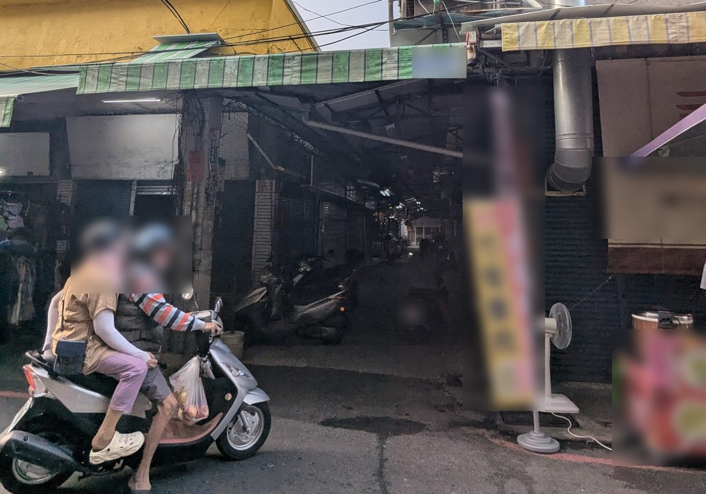

2025年大年初一，北區市場火警
- 時間與規模：2025年1月29日（大年初一）下午約1點21分報案，北區市場內一間店面住宅起火，消防局出動屏東、長治、麟洛等分隊12車27人。
- 消防車進不去：報導原文寫「市場內巷弄狹小，消防車無法進入」，消防人員把水線接進市場內灌救、防止延燒，約1個多小時撲滅。店面燒毀，屋內無人，沒有人受傷。
- 建物型態：報導引述消防人員說法，現場是「連動式平房」，2樓還有鐵皮加蓋，「所以增加火勢燃燒」。起火原因當時寫待火調，我查不到後續的火調結果。
消防車要過，要留3.5公尺淨寬
內政部的指導原則
內政部《劃設消防車輛救災活動空間指導原則》寫：供救助五層以下建築物的消防車通行道路，至少要保持3.5公尺以上的淨寬，以及4.5公尺以上的淨高。
同一份原則的第三點，專門講狹小巷弄裡有攤販的路段：避免搭密閉式遮雨棚，攤架要做成輕便、可以立即移動；巷子中間不要設燈柱等固定設施；攤販主管機關要輔導攤商自治會定期召集攤商辦自衛編組演練。
問題不在路面，在「淨空」
2026年10月21日早上我到北區市場現場看。路面本身看起來超過3.5公尺，問題是兩旁的遮陽棚、停放的機車、擺出來的商品，都在占消防車要用的空間。指導原則看的是「淨寬」和「淨高」，也就是扣掉這些東西之後還剩多少，不是路面畫線有多寬。

北區市場入口巷道，2026-10-21 攝（人臉、招牌、車牌已模糊）。我沒有用捲尺逐段量測，所以這裡不寫寬度數字。
過了一年多，改善在哪裡？
- 查不到改善工程：我查了屏東市公所和屏東縣消防局在政府採購網的公告，從2025年1月火警到2026年10月，查不到任何一件北區市場的消防改善工程，也查不到改善計畫、會勘或說明。
- 上一次單獨整修是民國99年：以「北區市場」為名的市公所標案，最近一筆單獨的案子是民國99年的大門意象、廁所水溝改善。之後只有民國109年永大、北區、東區、中央第2商場四個市場合併的設施改善工程（決標585萬元），北區市場分到哪些工項，公告上看不出來。
- 屏東沒有公開窄巷清冊：嘉義市在政府開放資料平台公布了「列管之狹小巷弄」，還追蹤紅線劃好了沒有；屏東縣我查不到同類清冊。
- 市場有哪些消防設備，查不到：零售市場在法規上屬於甲類場所，一定要設滅火器；面積夠大還要設火警自動警報、室內消防栓。北區市場的樓地板面積、現有設備、近年檢修結果，公開資料都查不到，所以也沒辦法判斷設備夠不夠。
本段依政府採購公告（市公所、縣府消防局機關公告全掃）、各類場所消防安全設備設置標準、嘉義市列管之狹小巷弄（政府開放資料）整理。「查不到」是指公開資料查不到，不代表一定沒有做；這正是我去申請資訊公開的原因。
我已經正式去問了
2026年10月10日，向市公所和消防局申請政府資訊公開
我依《政府資訊公開法》，分別向屏東市公所（市場主管機關）和屏東縣政府消防局提出申請，問的是：
- 市公所：北區市場的範圍、建造年份、樓地板面積、攤位數；現有消防設備和近3年檢修申報結果；通道設計寬度、近3年占用通道的勸導或處分件數；火警後有沒有會勘、檢討或改善規劃；有沒有申請過經濟部的市場改善補助。
- 消防局：屏東縣有沒有列管狹小巷道、北區市場有沒有在裡面；火警的火災原因調查結果；北區市場是不是消防安全檢查列管場所、近3年檢查結果；有沒有在北區市場辦過自衛消防編組演練。
依法機關要在15天內回覆，必要時可以延長15天。回覆來了，我會整理貼在這一頁，哪一題答了、哪一題沒答，寫清楚。
四件現在就做得到的事
一、錢有地方申請
經濟部115年新版「公有零售市場及列管夜市環境品質提升暨型塑亮點市場計畫」，鄉鎮市公所可以直接申請，一般型每件最多500萬元，「安全設施」項目明列老舊電線重新規劃與整理，複審委員也包括消防專家。這項要點沒有把消防設備列為補助項目，所以消防設備要另外編預算。屏東市公所民國109年就拿過經濟部的補助，做北區等四個市場的設施改善設計。
二、窄巷要列管
請縣府消防局公布狹小巷弄清冊，把北區市場的巷弄列進去，追蹤紅線有沒有劃、有沒有被占用。嘉義市已經在政府開放資料公開這份清冊，欄位裡就有「紅線劃設是否完成」。
三、平常就演練
市公所輔導攤商定期辦消防演練；攤架做成推得開、不搭密閉雨棚，讓水線和人進得去。這是內政部指導原則第三點寫的。桃園市在南門市場火災後，2026年6月由消防局、經發局、區公所在兩個市場辦實兵演練，練攤商初期滅火與通報、廣播疏散、收攤斷電，重點放在逃生路線要真的暢通。
四、換對的滅火器
市場裡最常見的起火點是油鍋和電器。內政部消防署的居家滅火器資料，把強化液滅火器對食用油、炸油火災標為最適合，電器火災標為適用。我建議市公所在市場各排攤位添購強化液滅火器，讓攤商伸手就拿得到。
同一份資料也提醒：二氧化碳滅火器不適用炸油火災，機械泡沫滅火器不能用在電器火災，用錯反而危險。
別的地方已經在做
- 市場消防設備改善：羅東鎮民生市場（2025、2026年連續兩年）、嘉義市保安與友愛市場、基隆市仁愛等12座公有市場、和美鎮公有市場、新北三重光明市場都發包過消防設備改善工程，金額從24萬到335萬元，都是地方自己編預算。
- 每年統一檢修：高雄市經發局從2021年起，每年發包一案「公有市場消防安全設備檢查申報」。
- 火災後全面體檢：桃園市南門市場火災後，消防局主責、跨局處聯合稽查全市61處市場，並輔導市場建立防火管理組織。
來源：政府採購網決標公告（羅東、嘉義市、基隆、和美、新北三重、高雄市經發局）；聯合報（2025-11-18）
FAQ
Q：北區市場去年的火警發生了什麼事？
A：2025年1月29日（大年初一）下午1點多，北區市場內一間店面住宅起火，消防局出動12車27人。報導寫「市場內巷弄狹小，消防車無法進入」，消防人員把水線拉進市場灌救，約1個多小時撲滅，無人傷亡。起火原因我查不到火調結果。
Q：消防車要多寬的路才進得去？
A：內政部指導原則規定，消防車通行道路至少要3.5公尺淨寬、4.5公尺淨高。有攤販的狹小巷弄，攤架要能立即移動、避免密閉雨棚，主管機關要輔導攤商定期演練。
Q：火警之後，北區市場有改善嗎？
A：從2025年1月到2026年10月，我在政府採購公告查不到任何一件北區市場的消防改善工程。我10月10日已向市公所和消防局申請資訊公開，回覆來了會更新在這一頁。
Q：游子昂對北區市場消防提出哪些建議？
A：四項：市公所申請經濟部市場改善補助、消防局公布並列管狹小巷弄、攤商定期消防演練、市場各排攤位添購強化液滅火器。
Q：為什麼建議強化液滅火器？
A：市場裡最常見的是油鍋和電器。消防署資料把強化液滅火器對炸油火災標為最適合、電器火災標為適用；二氧化碳滅火器不適用炸油火災，機械泡沫滅火器不能用在電器火災。
相關政見：轄內市場、夜市食安稽核・公園防災韌性
- 屏東市北區市場鞋店失火 店面付之一炬｜自由時報（2025-01-29）
- 屏東北區市場火警｜ETtoday（2025-01-29）
- 劃設消防車輛救災活動空間指導原則｜內政部主管法規共用系統
- 各類場所消防安全設備設置標準｜全國法規資料庫
- 經濟部115年公有零售市場及列管夜市環境品質提升暨型塑亮點市場計畫申請作業要點（PDF）
- 嘉義市列管之狹小巷弄｜國網中心資料集平台
- 居家滅火器懶人包｜內政部消防署消防防災館（2023-08-23）
- 桃園市場實兵演練｜中時新聞網（2026-06-25）
- 桃園61處市場消防安全大體檢｜聯合報（2025-11-18）
- 政府採購網公告：屏東市公所、屏東縣政府消防局機關公告；羅東鎮、嘉義市、基隆市、和美鎮、新北市三重區、高雄市經濟發展局市場消防設備標案
- 游子昂依《政府資訊公開法》向屏東市公所、屏東縣政府消防局提出之申請（2026-10-10）